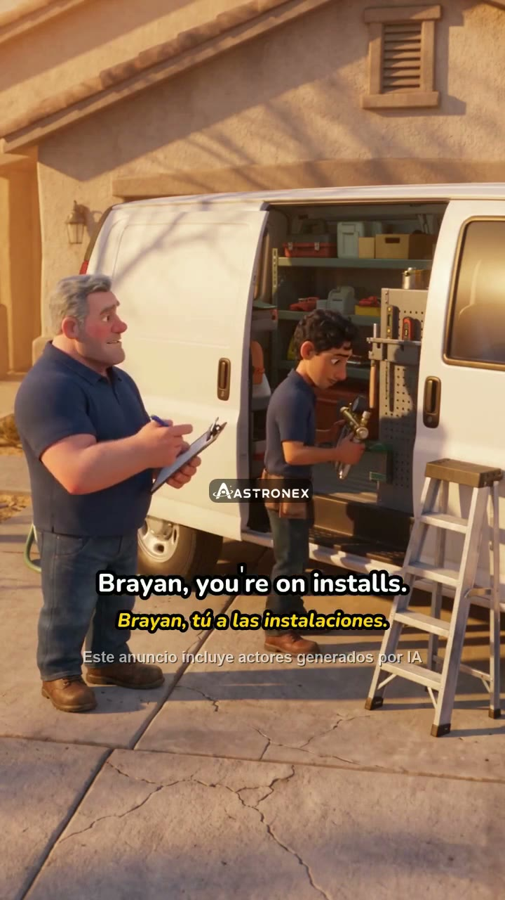
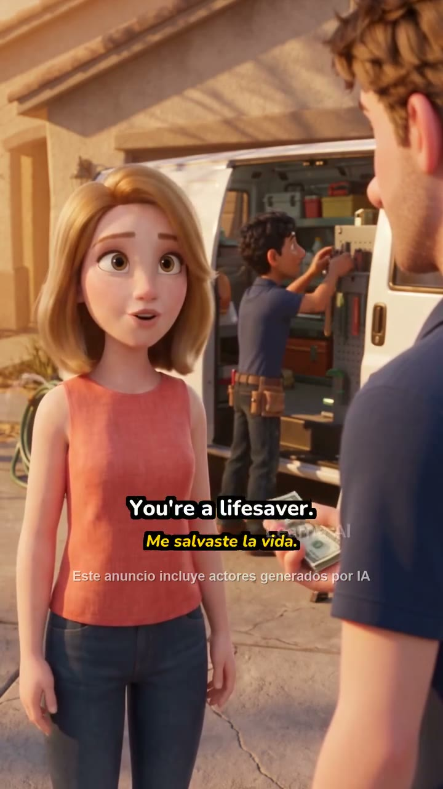

Lô 23/10-2 · 40 video · máy xong 40/40 · cần bạn: 3 video, 5 đoạn · 31 video máy chắc · 6 video không có logo cũ

Sắp theo việc cần làm. Dải màu là cả video theo thời gian: xanh máy chắc đã thay · vàng máy đoán (nội suy) · đỏ còn lộ / máy mất dấu · xám không có logo cũ. Bấm một dòng để sửa.
Test 03_13.mp4 5′51″ · 2 đoạn đỏ
Đỏ ở 0:02 và 4:31 — bấm đoạn đỏ là nhảy tới đó

Test 03_12.mp4 0′18″ · máy không tìm thấy logo cũ
Máy không chắc logo ở đâu. Bạn chỉ 1 lần trên 1 khung — máy tự làm phần còn lại.
Test 03_22.mp4 0′16″ · 1 đoạn vàng dài
Máy đoán 2 giây giữa video — xem nhanh rồi bấm Đúng hoặc Sửa
31 video
31 video máy chắc · toàn xanh
Xem lướt 6 video ngẫu nhiên rồi duyệt cả nhóm (1 cú bấm)
0:000:02 · khung 635:51
Test 03_13.mp4 — đoạn đỏ 1/2
Máy đè lệch trái: chữ "AI" của logo cũ còn lộ bên phải ô ASTRONEX (soi ảnh khung thật).
Phóng to ×2,5 quanh khung vàng — đây là chỗ để nhìn, không phải khung nhỏ bên trái.
- Kéo / kéo góc khung vàng cho trùm hết logo cũ.
- Bấm Máy làm lại từ đây: máy bám lại từ khung này cho tới khi khớp với đoạn xanh kế tiếp.
- Xem 2 giây kết quả rồi bấm Đúng.
Sửa của bạn được lưu thành một ca kiểm tra: mọi bản cải tiến sau phải làm đúng chỗ này trước khi được đưa lên.
Phím tắt J/L lùi/tới 1 khung · Shift+J/L đoạn đỏ trước/sau · Space xem gốc · Enter Đúng
Hỏi bạn: khi máy biết chỗ logo nhưng có phụ đề chồng lên, máy có nên đè luôn không?
Mẫu CÁCH TRÌNH một quyết định: ảnh thật trước/sau + 1 câu hệ quả + số đếm. Không dùng mã nội bộ. (Câu này user ĐÃ chốt 22/10 — chỉ dùng làm ví dụ định dạng, không phải câu hỏi mới.)
A. Đè luôn (như hiện tại)
Hệ quả: logo cũ bị che ở thêm nhiều khung hơn, nhưng ô ASTRONEX có thể đè lên một phần phụ đề.
số khung đổi: MINH HOẠ — lấy từ bộ đề khi trình thật

B. Giữ hình gốc ở những khung đó
Hệ quả: phụ đề luôn đọc được, nhưng logo cũ lộ lại trong các khung có phụ đề chồng.
số khung đổi: MINH HOẠ